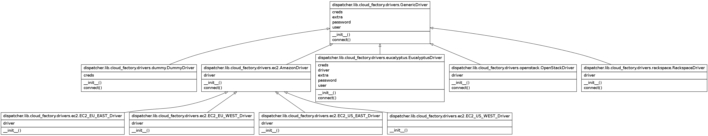

How to...¶
How to launch ?¶
In a dev environment could be enough use the flask web server:
cd middleware/orchestrator python runserver.py
If you want use a more reliable environment gunicorn is your pal:
gunicorn -w 1 -b 0.0.0.0:5070 dispatcher:app
If you want a more verbose logging you can use related directive:
gunicorn -w 1 -b 0.0.0.0:5070 --access-logfile /tmp/access_log --error-logfile /tmp/error_log dispatcher:app
It is also possible to configure apache to let the middleware benefits by this great web server reliability.
Warning
The apache approach must be improved, actually it is broken due to circular imports inducted by the adoption of Flask Blueprints
How to customize it?¶
A good text editor is enough.
It dipends on which side you intend to modify, it is likely you want to use your favorite cloud so be warned that Orchestrator has been built over Libcloud. The Orchestrator has been largely tested on Openstack and the Dummy driver of Libcloud, if you want to connect a different cloud be sure Libcloud covers the API, then prepare_cloud_environment() is your point to customize. Customization aspects should be to let the Orchestrator safetly logins to your cloud service.
How to generate this doc?¶
The point is ... if you are reading this, how did somebody generate it?
Sphinx is the key and requirements point to what is necessary to build the documentation ( just a couple of additional Sphinx modules ), then :
cd middleware/orchestrator ./make_mw_docs.sh
and let the flow go ahead.
This script does:
- turns up a fake server
- build documentation
- ask for a couple of documented routines, so you can see JSON results without any effort
- Wait a few seconds if the launching process fails, then retry, if it fails again check:
- the port 5050 is used? you can free this port and build the doc or modify the script ( change 5050 to whatever you want ) and propagate the same changes to docs/api_v1.rst.
- Are all Sphinx modules properly installed? Check & retry ...
How can I set connection and configurations?¶
There are several ways to do it, the simplier is to edit settings and modify it accordingly with your taste
How can I develop a new driver for a cloud provider¶
For testing purpose 4 drivers are currently developed:

- DUMMY = ‘dummy’
- OPENSTACK = ‘openstack’
- EUCALYPTUS = ‘eucalyptus’
- RACKSPACE = ‘rackspace’
{kind=link}
Using libcloud as driver engine, each driver supported by this library is also supported by this middleware.
Documentation, test coverage and instructions about how to use libcloud are downloadable pdf or readable in his official site .
In this pic you can find the hierarchy, every driver class have a GenericDriver parent that gives an anbstract way to wrap the libcloud driver and perform some initialization stuff to the actual driver object.
To develop a new driver locate the main lib folder of the middleware and edit __init__.py, here you have to add a label to identify your new cloud, here we call this Provider.
In the folder dispatcher/lib/cloud_factory edit __init__.py is specified the connection between a Provider and his specific driver, so ... where to place the brand new driver or where to inherit an already developed one.
Next step is to inherit the generic driver and override __init__ and connect, e.g. we can take dispatcher/lib/cloud_factory/drivers/eucalyptus.py
from libcloud.compute.types import Provider from libcloud.compute.providers import get_driver from . import GenericDriver class EucalyptusDriver(GenericDriver): """ OpenStack base node driver """ def __init__(self, creds): """ @param creds: Credentials """ self.creds = creds self.user = self.creds.get('USER', '') self.password = self.creds.get('PASSWORD', '') self.extra = self.creds.get('EXTRA_PARAMS', {}) self.extra['secret'] = self.password self.driver = get_driver(Provider.EUCALYPTUS) def connect(self, **kwargs): driver = self.driver(self.user, self.password, **self.extra) return driver
Libcloud’s aim is to abstract connections to clouds making them as close as possible, here __init__ purpose is to express the proper way to use the libcloud driver.
Eucalyptus driver is a good example, his libcloud connection parameters are slightly different compared with other drivers so, in order to use same parameters in settings we need to have a map in the initialization routine in this class.
To enable you driver you have to express the configuration environment in settings
class CloudConfig(object): CLOUD_FARM = { 'default': { 'ENGINE' : Provider.EUCALYPTUS, 'USER' : 'eucalyptus_access_key', 'PASSWORD' : 'eucalyptus_password_key', 'EXTRA_PARAMS': { 'host': "eucalyptus.ecc.eucalyptus.com", 'secure' : False, 'port' : 8773, 'path' : "/services/Eucalyptus" } } }
- default is the default cloud, each cloud item must be a key-value item and must define:
- a unique name, in the example default
- ENGINE
- credentials, if the cloud driver needs it
- EXTRA_PARAMS, miscellaneous data